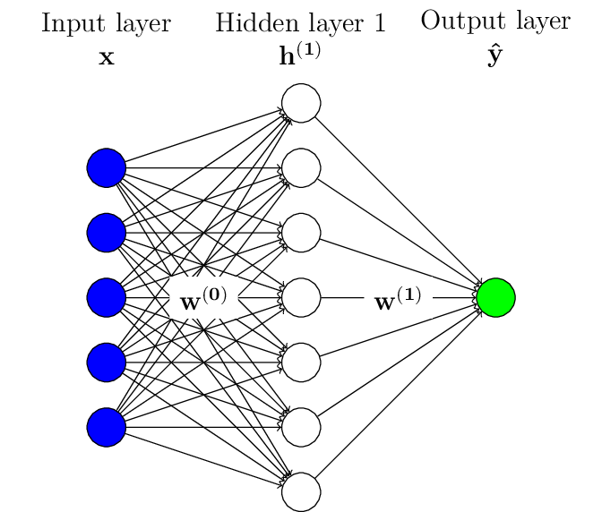
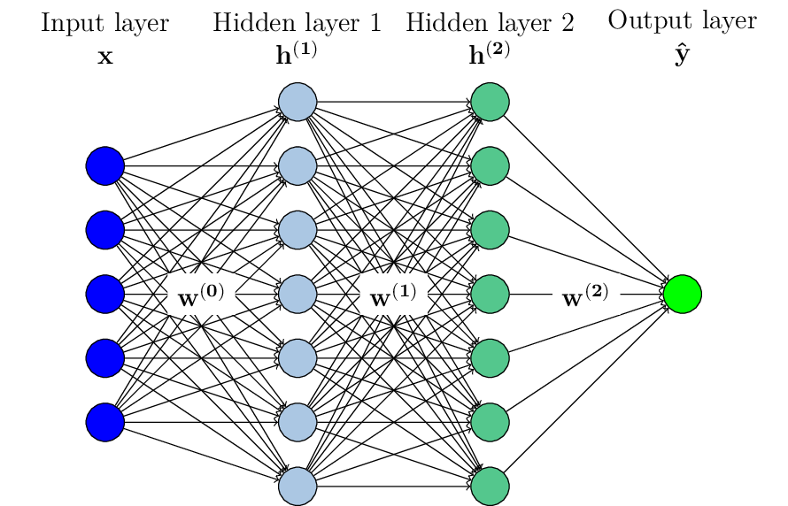

Multi Layer Perceptrons (MLP)
Contents
Multi Layer Perceptrons (MLP)#
In the previous chapter, we have seen a very simple model called the Perceptron. In this model, the predicted output \(\hat{y}\) is computed as a linear combination of the input features plus a bias:
In other words, we were optimizing among the family of linear models, which is a quite restricted family.
Stacking layers for better expressivity#
In order to cover a wider range of models, one can stack neurons organized in layers to form a more complex model, such as the model below, which is called a one-hidden-layer model, since an extra layer of neurons is introduced between the inputs and the output:

The question one might ask now is whether this added hidden layer effectively allows to cover a wider family of models. This is what the Universal Approximation Theorem below is all about.
Universal Approximation Theorem
The Universal Approximation Theorem states that any continuous function defined on a compact set can be approximated as closely as one wants by a one-hidden-layer neural network with sigmoid activation.
In other words, by using a hidden layer to map inputs to outputs, one can now approximate any continuous function, which is a very interesting property. Note however that the number of hidden neurons that is necessary to achieve a given approximation quality is not discussed here. Moreover, it is not sufficient that such a good approximation exists, another important question is whether the optimization algorithms we will use will eventually converge to this solution or not, which is not guaranteed, as discussed in more details in the dedicated chapter.
In practice, we observe empirically that in order to achieve a given approximation quality, it is more efficient (in terms of the number of parameters required) to stack several hidden layers rather than rely on a single one :

The above graphical representation corresponds to the following model:
To be even more precise, the bias terms \(b^{(l)}_i\) are not represented in the graphical representation above.
Such models with one or more hidden layers are called Multi Layer Perceptrons and we will present their characteristics in the following.
Activation functions#
The special case of the output layer#
Declaring an MLP in keras#
In order to define a MLP model in keras, one just has to stack layers.
As an example, if one wants to code a model made of:
an input layer with 10 neurons,
a hidden layer made of 20 neurons with ReLU activation,
an output layer made of 3 neurons with softmax activation,
the code will look like:
from tensorflow.keras.layers import Dense, InputLayer
from tensorflow.keras.models import Sequential
model = Sequential([
InputLayer(input_shape=(10, )),
Dense(units=20, activation="relu"),
Dense(units=3, activation="softmax")
])
model.summary()
2022-10-02 18:09:16.079918: I tensorflow/core/platform/cpu_feature_guard.cc:193] This TensorFlow binary is optimized with oneAPI Deep Neural Network Library (oneDNN) to use the following CPU instructions in performance-critical operations: AVX2 AVX512F FMA
To enable them in other operations, rebuild TensorFlow with the appropriate compiler flags.
2022-10-02 18:09:16.668959: W tensorflow/stream_executor/platform/default/dso_loader.cc:64] Could not load dynamic library 'libcudart.so.11.0'; dlerror: libcudart.so.11.0: cannot open shared object file: No such file or directory
2022-10-02 18:09:16.668986: I tensorflow/stream_executor/cuda/cudart_stub.cc:29] Ignore above cudart dlerror if you do not have a GPU set up on your machine.
2022-10-02 18:09:16.705401: E tensorflow/stream_executor/cuda/cuda_blas.cc:2981] Unable to register cuBLAS factory: Attempting to register factory for plugin cuBLAS when one has already been registered
2022-10-02 18:09:17.602724: W tensorflow/stream_executor/platform/default/dso_loader.cc:64] Could not load dynamic library 'libnvinfer.so.7'; dlerror: libnvinfer.so.7: cannot open shared object file: No such file or directory
2022-10-02 18:09:17.602835: W tensorflow/stream_executor/platform/default/dso_loader.cc:64] Could not load dynamic library 'libnvinfer_plugin.so.7'; dlerror: libnvinfer_plugin.so.7: cannot open shared object file: No such file or directory
2022-10-02 18:09:17.602844: W tensorflow/compiler/tf2tensorrt/utils/py_utils.cc:38] TF-TRT Warning: Cannot dlopen some TensorRT libraries. If you would like to use Nvidia GPU with TensorRT, please make sure the missing libraries mentioned above are installed properly.
Model: "sequential"
_________________________________________________________________
Layer (type) Output Shape Param #
=================================================================
dense (Dense) (None, 20) 220
dense_1 (Dense) (None, 3) 63
=================================================================
Total params: 283
Trainable params: 283
Non-trainable params: 0
_________________________________________________________________
2022-10-02 18:09:19.415822: W tensorflow/stream_executor/platform/default/dso_loader.cc:64] Could not load dynamic library 'libcuda.so.1'; dlerror: libcuda.so.1: cannot open shared object file: No such file or directory
2022-10-02 18:09:19.415856: W tensorflow/stream_executor/cuda/cuda_driver.cc:263] failed call to cuInit: UNKNOWN ERROR (303)
2022-10-02 18:09:19.415880: I tensorflow/stream_executor/cuda/cuda_diagnostics.cc:156] kernel driver does not appear to be running on this host (fv-az39-946): /proc/driver/nvidia/version does not exist
2022-10-02 18:09:19.416840: I tensorflow/core/platform/cpu_feature_guard.cc:193] This TensorFlow binary is optimized with oneAPI Deep Neural Network Library (oneDNN) to use the following CPU instructions in performance-critical operations: AVX2 AVX512F FMA
To enable them in other operations, rebuild TensorFlow with the appropriate compiler flags.
Note that model.summary() provides an interesting overview of a defined model and its parameters.
Exercise
Relying on what we have seen in this chapter, can you explain the number of parameters returned by model.summary() above?
Solution
Our input layer is made of 10 neurons, and our first layer is fully connected, hence each of these neurons is connected to a neuron in the hidden layer through a parameter, which already makes \(10 \times 20 = 200\) parameters.
Moreover, each of the hidden layer neurons has its own bias parameter, which is \(20\) more parameters.
We then have 220 parameters, as output by model.summary() for the layer "dense (Dense)".
Similarly, for the connection of the hidden layer neurons to those in the output layer, the total number of parameters is \(20 \times 3 = 60\) for the weights plus \(3\) extra parameters for the biases.
Overall, we have \(220 + 63 = 283\) parameters in this model.